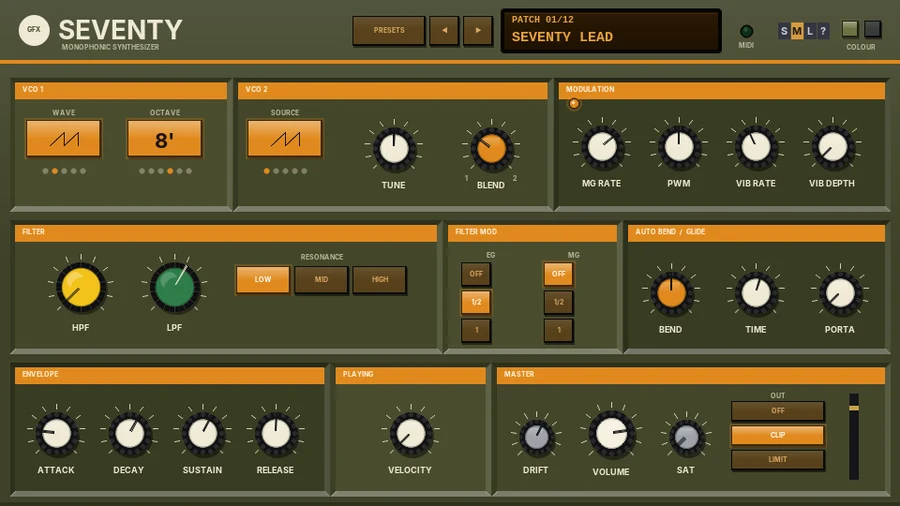

G Seventy
A 70s two-oscillator mono synth: six-octave VCO, ring and noise, high- and low-pass filter knobs, auto bend and heavy drift.

Overview
G Seventy is a monophonic synth in the spirit of the mid-70s Japanese two-oscillator monos. VCO 1 gives a choice of five waves over six octaves, down to a 64' sub-bass. VCO 2 adds a second saw, a ring-modulated tone or one of three noises, and BLEND mixes the two. The sound then runs through the FILTER: a high-pass and a low-pass filter in series, each with its own knob. Move the two together and the pass band travels up and down the spectrum; pull them apart for a wide, open sound, or close them in for a thin, nasal one.
As on the originals there are no pitch or mod wheels on the panel. Instead, AUTO BEND bends the pitch into every new note and VIBRATO has its own LFO. G Seventy is unstable on purpose: DRIFT is set high by default, so the pitch, the filters and even the envelope's timing wander like an old synth warming up. Pitch bend from your keyboard still works (+/-2 semitones).
Reach for it for
- Thick, wobbly 70s leads
- Deep 32' and 64' bass
- Ring-modulated bells and metallic tones
- Wind, surf and whistle effects from the noise sources
- Brass stabs with a built-in pitch scoop
Controls
WAVE, OCTAVE and SOURCE are cycle keys: click for the next setting, right-click for the one before. The dots under each key show where you are.
VCO 1
- WAVE
- Triangle, saw, square, a narrow pulse, or PW (a pulse whose width is swept by the MG, the main LFO). The key shows the wave's shape, or PW.
- OCTAVE
- 64', 32', 16', 8', 4' or 2'. 8' is standard pitch; each step down is an octave lower.
VCO 2
- SOURCE
- Saw (a second saw), RING (VCO 1 ring-modulated by VCO 2: clangorous, bell-like tones that change with TUNE), WHITE (white noise), PINK (pink noise, darker) or RED (red noise, a deep rumble).
- TUNE
- VCO 2's pitch against VCO 1, -12 to +12 semitones. A few hundredths of a semitone gives a slow beat; 7 or 12 give fifths and octaves.
- BLEND
- The mix: fully left is VCO 1 only, fully right VCO 2 only.
MODULATION
- MG RATE
- The main LFO's speed, 0.1 to 30 Hz (a triangle wave). It sweeps the PW wave and, with the MG switch, the filters. The orange light blinks with it.
- PWM
- How far the MG sweeps the pulse width when VCO 1 is on PW.
- VIB RATE / VIB DEPTH
- Vibrato on its own LFO, separate from the MG: 1 to 12 Hz, up to 100 cents.
FILTER
- HPF
- The high-pass filter's cutoff, 20 Hz to 8 kHz (yellow knob).
- LPF
- The low-pass filter's cutoff, 60 Hz to 18 kHz (green knob). Both filters are 12 dB per octave.
- RESONANCE
- LOW, MID or HIGH: the peak at both cutoffs.
FILTER MOD
- EG
- How far the envelope opens both filters: OFF, 1/2 or 1 (about 5 octaves).
- MG
- How far the MG sweeps both filters: OFF, 1/2 or 1 (about 2 octaves each way).
AUTO BEND / GLIDE
- BEND
- Each new note starts this far from its pitch, -12 to +12 semitones, and bends into it. Negative scoops up from below, positive falls from above. 0 is off.
- TIME
- How long the bend takes, 10 ms to 2 s.
- PORTA
- Portamento: the pitch glides from one note to the next, 0 (off) to 1.5 s.
ENVELOPE
- ATTACK, DECAY, SUSTAIN, RELEASE
- One envelope shapes both the amp and (through the EG switch) the filters. Playing legato (overlapping notes) keeps the envelope going rather than restarting it.
PLAYING
- VELOCITY
- How much key velocity changes the level, 0% (none, as on the originals) to 100%.
MASTER
- DRIFT
- See Drift below.
- VOLUME
- -24 to +6 dB.
- SAT
- The GFX band saturation on the output (0% by default).
- OUT: OFF / CLIP / LIMIT
- The GFX output stage. CLIP (the default) is a soft clipper just under 0 dB; LIMIT is a look-ahead limiter. The band frequencies, bias and ceiling are in the parameter list.
- Meter
- The output level.
The header
- PRESETS
- Opens the patch list (or click the display). An asterisk after the patch number means you have changed it.
- ◄ / ►
- Step through the patches.
- MIDI
- Blinks on each note.
- COLOUR
- Two swatches: olive (the default) or slate. The choice is saved with the project.
- S / M / L
- Panel size: small, medium or large. The panel also scales to fit the plugin window.
- ?
- Opens a pop-up with the design credit, the GFX website address and the address of this manual. Click anywhere to close it.
Drift
DRIFT is heavy on G Seventy: 60% by default, scaled further than the other GFX instruments. The pitch wanders, VCO 2 drifts against VCO 1, the pulse width and both filters move, and every new note starts slightly off tune. The envelope's timing wanders too, slowly and a little differently on every note, so attacks and releases never quite repeat. Turn it down for a steadier, more modern sound; 0% is steady.
Patches
- Seventy Lead
- Saw with a slightly detuned second saw, gentle vibrato and a touch of portamento.
- 64' Bass
- A 32' square with VCO 2 an octave up: deep and round.
- Filter Sweep
- Two saws with the MG slowly sweeping the filters at high resonance.
- Ring Bells
- Ring modulation a fifth apart, long decay: bell and gong tones.
- PWM Strings
- A slow PWM wave with a soft attack and release.
- Auto Bend Brass
- Saws with the envelope fully on the filter and a short scoop up into every note.
- Whistle
- Mostly triangle, with a breath of pink noise through a resonant band.
- Wind
- Pink noise only, the filters swept slowly by the MG at high resonance.
- Squelch
- A 16' pulse through a nearly closed, resonant low-pass with a snappy envelope.
- Theremin
- A pure triangle with wide vibrato and slow portamento.
- Zap Drum
- A 32' triangle with white noise, dropping an octave in 70 ms: a laser-like tom.
- Hollow Pipe
- A square with VCO 2 an octave up through a narrow band.
Tips
- Set HPF and LPF close together with RESONANCE on HIGH, then turn them as a pair for a talking, vocal sweep.
- For ring-mod effects, try TUNE settings that are not whole semitones.
- AUTO BEND with a short TIME and -1 to -3 semitones gives brass-like scoops; long times give sci-fi swoops.
- With OCTAVE on 64', keep the HPF low or the fundamental disappears.
File: gfx-g-seventy.jsfx